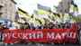
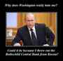

< < < Back
Why Russia Is Becoming A More Attractive Place For Neomasculine Men To Call Home – Return Of Kings
A man who (wisely) chooses to leave the Western world today for greener pastures in the east has to be conscientious of the likelihood and timeline of their new home inheriting the pernicious and debilitating cultural Marxism and feminism of the west. A man moving to a place like Poland (or even Western Ukraine) today moves with the knowledge that these countries are on the trajectory towards Westernization and will very likely one day become unhealthy and hostile for a man to live and thrive in.
Due to their history and a variety of current cultural factors, places like Poland will still take a number of years to get anywhere near the DEFCOCK levels of America or the UK. One who chooses to live in an “on the trajectory” nation like Poland today does so by making a calculation that it may be, say, 5-10 years behind the levels of feminism in Western Europe and that it is still worth it to enjoy the particular benefits of this society during the decline, while they still remain. It is a temporary reprieve rather than a long-term fix to the problems men face in the west.
A Possible Solution?

Enter Russia. Russia presents intriguing future prospects for the modern neomasculine man because it is perhaps the only developed nation that is not “on the trajectory” towards Westernization. In fact, not only is Russia not on the trajectory Western feminization, but it is actively making strides in many areas to become more traditional and neomasculine than it is already.
Much of the credit for this resistance to Westernization can be attributed to Vladimir Putin – a strong, masculine, and intelligent leader who appears to be primarily interested in advancing the interests of the his nation and people rather than being firstly loyal to the lobbying interests of large corporations and other dubious groups that are accelerating much of Western cultural decline.
The intention of this article is to analyze how the recent policy of the Russian government in three critical areas – food, demography, and debt – is contributing to making Russia hold out from cultural decline and how emerging policy in these areas offer hope that Russia will be an increasingly attractive place for modern neomasculine men to call home.
Food

Russian policy envy on Twitter.
The question of how to sustain and nourish oneself is an important consideration for the modern man, as the prevalence of real “food” in the West declines and is replaced by chemicals, additives, and other garbage made in a factory. The regulation of what food is “safe” and recommendations on diet makeup that come from Western governments’ food agencies can seldom be trusted because these regulators and researchers are bought off by large agri-food corporations that are pursuing a specific, profit-driven agenda for our food.
While the industrial food system continues to expand its reach over virtually every aspect of the Western diet, Russia has taken steps to implement meaningful food policies that protect its citizens from some of the pseudo-food now so commonly found in the west. Under Putin, Russia has completely banned the cultivation and import of Genetically Modified Foods (GMOs) for at least the next ten years so that the impact of these foods can be more properly studied before becoming part of the diet.
While the long-term effects of GMO consumption are unknown, there are already studies which link consumption of GMOs to tumors, birth defects, endocrine disruption, cancer, and obesity. Russia is prudently erring on the side of caution and not allowing its citizens to consume this new form of food which we do not yet know enough about. By contrast, in the United States, GMO foods are not only allowed but also need not be labelled. Even aware American consumers who want to avoid them have no easy way to do so.
Russia is also moving towards an increasingly organic agriculture system and the government has begun banning the use of many of the harshest, most unnatural pesticides and chemicals. The growth in prevalence of organic food in Russia is the highest of any nation in the world right now. For those men who dream of a simpler life living on an organic farm with a Slavic beauty and starting a family of healthy, half-Slavic stock, it is worth noting that Russia has immense amounts of beautiful vacant fertile land and women.
Even the centre-left Guardian acknowledges that “Russia is a haven for would-be organic farmers as land is relatively cheap and abundant, negating the need for many intensive agriculture inputs.” While in America the government often bullies and disadvantages small producers in favor of large food conglomerates, the Russian government has in place incentives and assistance mechanisms to create more small-scale food producers in rural areas.
Demography
Much of the western world has not had a sustainable fertility rate for at least several decades. The population growth occurring in Western countries can be attributed almost entirely to immigrants, and once inside the country these immigrant groups often have a much higher birth rate than the native population.
This has strong implications for the preservation of the culture, values, laws, and traditions of these nations. While multiculturalism and the idea of having different distinct groups and nations (sometimes even with their own laws and territories) is now commonplace throughout much of the West, Russia is going against the tide by strictly controlling inflow to Russia, forcing assimilation rather than allowing multiculturalism and is taking steps to increase the native Russian birthrate to sustainable levels.
Putin is steadfastly in support of integrating immigrants through assimilation. It is expected that immigrants to Russia will give up many of the cultural elements of their former home and adopt Russian culture, language and traditions. Russia does not make accommodations for the holidays, celebrations, traditions and rituals of non-Russian ethnic groups in the same way that most western nations do.
Multiculturalism “elevates the (idea of the) ‘right of minorities to be different’ to the absolute and, at the same time, insufficiently balances this right with civil, behavioral, and cultural obligations in regard to the indigenous population and society as a whole,” Putin argues. Russia is intent on protecting its current culture and is even embarking upon ambitious civilization-building projects to unite ethnic Russians of various different nationalities under the banner of being “Russian” before all else.
Putin’s leadership in protecting the culture of his people can also be clearly seen in his response to the recent migrant crises. Russia is not accepting hordes of migrants who won’t assimilate well and promising them ridiculously large social benefits, as many countries in Western Europe are.

Russian nationalists demonstrate.
Finally, Putin has introduced a number of pro-family policies such as a benchmark expectation that Russian families have at least three children. Putin said that “for Russia to be sovereign and strong, there should be more of us.” The Russian government has bonuses in place that act as incentives for families to have more children and relieve the financial burden that children can pose to a family.
Russia has also shown its support for the traditional, nuclear family by refusing to adopt the same pro-LGBTQ-LMNOPQRS delusional agenda for degenerate families that is commonplace and quickly evolving within the Western world. Nontraditional sexual relations may not be promoted to minors in any capacity. Compare this to most western nations where sexual education curricula for kids as young as five and six are quickly being adapted to include confusing messages about a range of deviant and dangerous sexual behaviours that the state now sanctions and promotes as normal and healthy.
Russia is protecting the traditional family in a way that other modern nations are not, because Russia knows that the family unit is an important building block to the construction and preservation of a stable society that maintains Russian values. The policy of most Western nations, by contrast, is to destroy and destabilize the family at all possible junctures in favor of the state.

Putin hands out the ‘Order of Parental Glory’ to families with more than seven children in a special ceremony.
Debt
Western nations – particularly the United States – have come to acquire crippling levels of debt that pose a threat to financial health and an extremely unfair burden on future generations. Money has been wasted by left-wing and right-wing governments alike on inefficient bureaucracies, useless social programs, welfare schemes, and numerous unnecessary wars. Politicians and the elite continue to make off with immense amounts of wealth while ordinary tax-payers find it harder and harder to get ahead. Today, most Western governments cannot possibly meet all of their self-imposed obligations and self-made promises without spending well beyond their revenues.
Russia, under Putin, is the only modernized nation which appears to have at least some understanding of the harmfulness of racking up unsustainable levels of debt and has taken some actions to correct this. When Putin came to power in 2000, Russia had over $50 billion in debt owed to external banks known to be controlled by some of the world’s financial elite. Putin took immediate action to pay off this debt by diverting profits from the Russian state-owned gas company during a time when it was thriving under an environment of extremely high oil prices.
By 2006, Russia had rid itself of owing anything to international, elite-owned and controlled banks. The financial elite that controls much of the money supply around the globe was none too pleased about this, and have since attempted to employ a variety of financial and media-narrative methods to try to cripple the Russian economy, currency, and the reputation of its leaders.
This is punishment for Russia’s lack of participation and cooperation in letting elite-controlled banking exerting influence over its nation-state with the intention of destabilizing Russia and turning its people against its current nationalistic government, which the elite could help to replace with an internationalist regime that would be friendly to the interests of the global financial elite.
Even though recent economic tough times have forced the Russian government to incur more debt in the last year or so, a comparison of key financial metrics between the United States and Russia for 2014 shows some important differences that definitely diverge from the common media narrative about the health of the Russian economy:
- The United States has 25 times more external debt than Russia in absolute dollars and 15 times more on a per capita basis.
- The United States has 47 percent higher unemployment levels than Russia (8.1% vs. 5.5%).
- A greater percentage of the population in the United States (15.1%) lives under the poverty line compared to Russia (12.7%).
- According to the IMF, Russia has approximately three times as much in official reserve assets and foreign currency assets ($357 billion vs. $121 billion) as of the year 2015.
These statistics, although only a sample of the vast amount of comparative economic data available, surprised me a lot because they paint a different picture of Russia’s financial health than that projected by the Western media, the ownership of which is concentrated in the hands of a few interests which happen to be tied to the global financial elite.
These interests would prefer Russia to foster a debt addiction similar to that of the United States and other Western nations. While the economy in Russia is far from perfect, the situation economically – especially when it comes to debt and providing for citizens – is not nearly as bad as it is often made out to be.
Russia under Putin appears to have far less of a debt addiction than the USA, more savings, and has shown a willingness to eliminate borrowing from the elite internationalist financial overlords. He has even issued standing arrest warrants for members of the Rothschild family and George Soros – widely known to be figures of the global financial elite – for their well-documented efforts to deliberately interfere with Russia’s currency and economy.

There are a lot of reasons to be hopeful about the path that Russia is currently on. It is well-positioned to hold out against the most culturally destructive forces in the world today and is making meaningful policy decisions that will ensure its society may be a good place for the next generation of masculine men to live.
I’ve decided that I’m going to spend two months in Russia in 2016 to get a better sense of how my quality of life there stacks up to my current living situation and more accurately gauge the cost of living on a more permanent basis.
Read More: Did SJWs Cost Russia Victory In The Eurovision Song Contest?